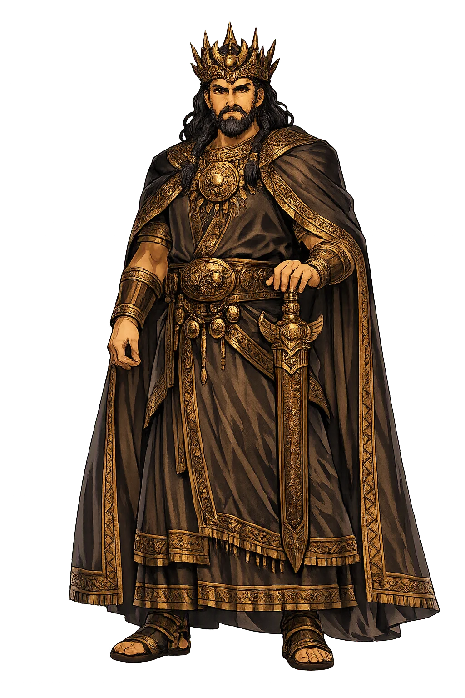
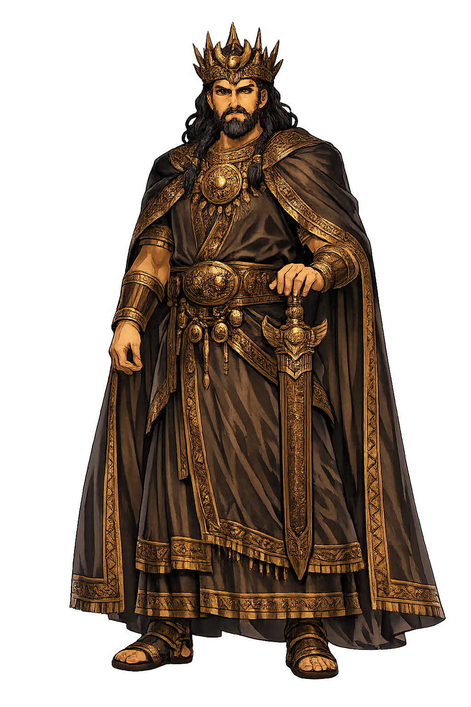

The Authentic Orthography
Primordial King, Heaven · The first king of the Hittite gods

Unicode restoration and ASCII comparison
𒀭𒀀𒆷𒇻
The name in its original Hittite form. Alalu (𒀭𒀀𒆷𒇻) is attested in the source tradition — “Unknown”. Its original diacritics and script distinctions carry the full phonetic and orthographic weight of the source tradition.
alalu
The plain alalu form is identical to the Unicode restoration. Because this name is already written in Latin letters, no diacritics, stress, or script information were lost — only capitalization differs.
Alalu
The Unicode restoration does not need to recover lost marks for Alalu. Its value is canonical spelling and consistent cataloguing, not the reconstruction of erased orthography. The domain is readable as-is to both DNS and humanity.
Alalu.com → alalu.com
The non-ASCII characters in Alalu are encoded while the ASCII remains visible. To the DNS, it is Punycode. To humanity, it is Alalu.
How Alalu travels from ancient script to the modern URL
Owned, ideal, and ASCII forms of Alalu
Alalu
Restores 𒀭𒀀𒆷𒇻. The full Unicode restoration. alalu.com is not in the PuniCodex collection — it is watched for release; if it drops, this temple upgrades to an owned flagship.
How Alalu was spoken
Primordial Kingship · Heavenly Sovereignty · Dynastic Succession
Alalu is the first king of the gods in Hittite and Hurrian mythology, the original occupant of the celestial throne before Anu the sky-god and long before the storm-god Teššub. His reign is narrated in the 'Kingship in Heaven' myth, a Near Eastern succession story that parallels the Greek sequence of Ouranos, Kronos, and Zeus. For nine years Alalu rules in heaven; then his servant Anu rises against him, and Alalu flees to the dark earth below. The kingship he loses becomes the inheritance that shapes the entire Hittite pantheon.
This temple treats Alalu as the archetype of primordial sovereignty: the ruler whose authority is ancient, legitimate, and yet destined to be overthrown. He is not a storm-god or a creator; he is the first holder of the mandate of heaven, the figure against whom every later king defines himself.
Alalu sits on the throne of heaven for a fixed term of nine years before Anu succeeds him — a precise motif of cyclic kingship.
Anu is Alalu's servant; his rise reverses the social order and begins the succession that leads to Kumarbi and Teššub.
Defeated, Alalu descends to the dark earth — not a punishment but the place from which older powers watch newer gods reign.
Through Kumarbi, Alalu becomes the grandfather of Teššub, so the defeated first king fathers the line that rules the storm.
Stories of Alalu
Alalu's mythology is almost entirely contained in the 'Kingship in Heaven' narrative, but that single text is enough to make him one of the most important figures in Hittite and comparative mythology. He is the beginning of the dynasty of heaven.
The Hittite 'Kingship in Heaven' myth (CTH 344) opens with Alalu seated on the throne in heaven. He is the first to hold kingship among the gods, and for nine years his word is law. The text, translated from a Hurrian original, presents kingship not as eternal but as a rotating office: even the highest god may be replaced when his term is fulfilled. Alalu's reign is therefore the prototype of legitimate rule, not its negation.
After nine years, Alalu's servant Anu confronts him and defeats him. Alalu flees 'down to the dark earth' — a descent that removes him from active rule but does not annihilate him. Anu then takes the kingship and rules in turn for nine years. The social inversion is striking: the servant becomes the master, and the first king becomes a chthonic memory. The pattern will repeat when Kumarbi, Anu's servant, overthrows Anu in turn.
Alalu's withdrawal to the dark earth is the Hittite equivalent of the deposed primordial father in other Indo-European and Near Eastern mythologies. Unlike Kronos, who is imprisoned in Tartaros, or Tiamat, who is killed and divided, Alalu simply departs. His continued existence below the ordered world gives him the quality of an ancestor rather than a destroyed enemy: he is past power, not present chaos.
The full succession runs Alalu → Anu → Kumarbi → Teššub. Kumarbi, who bites off Anu's genitals and becomes pregnant with the storm-god, is the son or ally of Alalu; through him the defeated first king becomes the ancestor of the reigning storm-god. This genealogy means that every thunderbolt Teššub hurls carries, in the distant background, the memory of Alalu's first throne.
The lore you have read is the surface — the living myth. Beneath it lies the scholarship: etymology, reconstructed pronunciation, Unicode character breakdown, and the cultural legacy of Alalu.
Enter Extended Lore